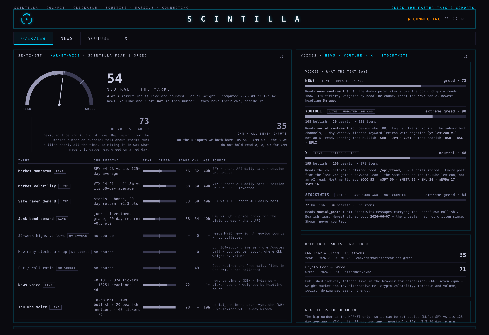
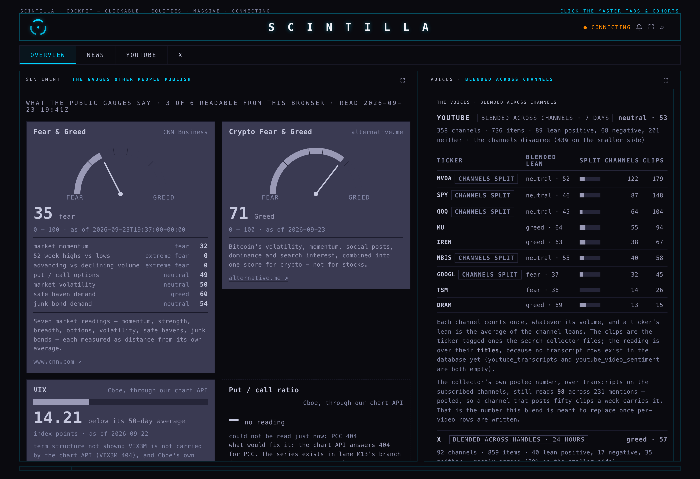
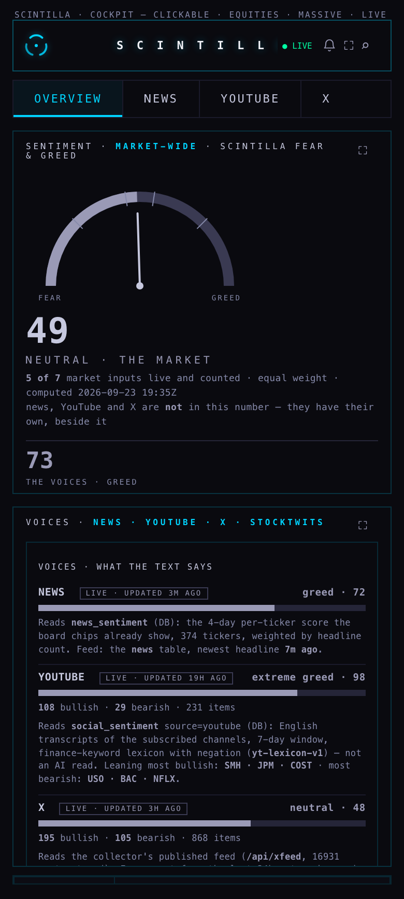
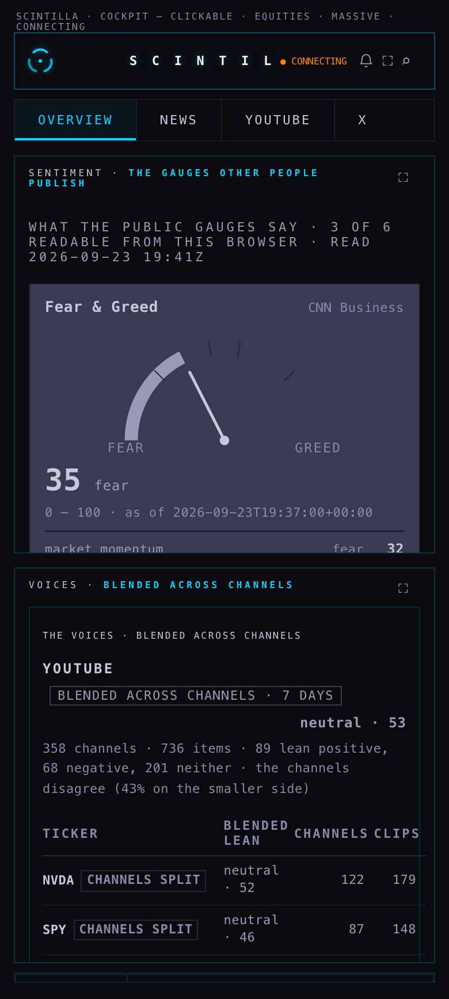

23 September 2026 · branch hub/sentiment-2-20260923 · built and checked on the MacBook · nothing deployed, nothing pushed
You asked three things. "The sentiment page… how exactly is this happening?" — that is the first section below, in plain words, before anything was changed. "Scoring by newest channel is not necessarily the right way. We need to blend the opinions of different channels." — that is now how the voices are read. "An internal sentiment meter when we don't have the entire market… same problem as the put to call." — that meter is gone, and the page says why. The headline is now the gauges other people publish, shown the way they publish them.
Four feeds, four different methods, none of them an AI reading the text. Here is exactly what happens to each one, and what makes each one wrong.
A scheduled job on the Mac collects clips two ways: everything new from the channels you subscribe to, and the results of ticker searches. Both land in a table called youtube_videos — 11,262 clips stored, of which 6,085 carry a ticker. For the subscribed channels the job then downloads the English subtitles and, around each mention of a ticker, counts words from a fixed finance word list — "breakout", "squeeze", "dump", "overvalued" — flipping a word when a "not" or "never" sits just before it. That is all it is: a word list with a negation rule, not a model, and nothing reads the video or the picture. The counts for the last seven days are added up per ticker and written as one row into social_sentiment — 63 tickers, 231 mentions at the time of writing.
What makes it wrong. The row is pooled: every mention counts the same, so a channel that posts fifty clips a week carries the number and a careful channel that posts once does not register. The only channel named on the row is last_channel, the newest one to mention that ticker — that is the "scoring by newest channel" you spotted, and it is a label, not a measurement. A word list cannot hear a question or a joke: "is NVDA about to crash?" counts as bearish. And the two tables that would let anyone check a single video — youtube_transcripts and youtube_video_sentiment — are both empty (0 rows), so the pooled number cannot be taken apart.
A browser-side collector saves the posts on your Trading list and republishes them at /api/xfeed — 16,931 posts today. Every post's text goes through the same finance word list, so a post is bullish, bearish or neither, and the day's reading was the net share of the posts that leaned. What makes it wrong: the same word-list limits, plus the fact that the picture is never read — on X the chart in the image often is the call. Posts with no ticker still vote.
631 stored messages in social_posts, each carrying the poster's own Bullish or Bearish tag, so nothing is inferred at all. What makes it wrong: the ingester stopped months ago. The page shows it and never counts it.
news_sentiment holds 374 rows: one score per ticker over four days, weighted by how many headlines it came from. What makes it wrong: individual headlines are not scored anywhere, and the stored row carries no publisher — so there is nothing to blend across outlets, and the page now says that instead of implying an outlet-level reading it does not have.
Each card shows the value, the publisher's own word for it, the date it refers to, one line on what it measures, and a link to the source. Nothing is averaged with anything else. A gauge whose source cannot be read from a browser shows a dash, the real reason, and what would fix it — never a guess and never an old number without its date.
| Gauge | Publisher | What it measures | State today |
|---|---|---|---|
| Fear & Greed | CNN Business | Seven market readings, each measured as distance from its own average | Live · 35 "fear" at 19:32Z, with all seven parts on the card (52-week highs 0, breadth 0, momentum 32, put/call 49, volatility 50, safe haven 60, junk bonds 54) |
| Crypto Fear & Greed | alternative.me | Bitcoin volatility, momentum, social posts, dominance, search interest | Live · 71 "Greed", 23 Sep |
| VIX | Cboe, through our chart API | The swing the options market expects in the S&P 500 over 30 days | Live · 14.21, 22 Sep session, below its 50-day average. The term structure line is not shown: VIX3M is not carried by the chart API, and Cboe's own file sends no cross-origin header, so a browser cannot read it directly. |
| Put / call ratio | Cboe, through our chart API | Puts traded for every call across all US options | Not readable · the chart API answers 404 for PCC. Lane M13's branch adds that route; I folded M13's commit in, so this card fills itself in the moment the chart API is deployed. |
| Investor sentiment survey | AAII, weekly | Members saying bullish / neutral / bearish for the next six months | Not readable · aaii.com answered HTTP 403 to this machine on 23 Sep and publishes no free data file. |
| Exposure index | NAAIM, weekly | What active managers report actually holding, −200 to +200 | Not readable · no public data route — the number is printed inside the web page and the site's data endpoint answered 404 on 23 Sep. |
The one thing that would fix three of these at once: a small reader on our own domain that fetches AAII's and NAAIM's weekly pages once a week and republishes the numbers with their dates, and the chart-API deploy that carries Cboe's put/call. That is one deploy and one tiny job, and it takes the headline from three live gauges to six.
You said it plainly: an internal meter when we do not see the whole market has the same problem as the put/call row did. Removed, and here is why that is the right call rather than moving it lower down. We hold 364 stocks out of some four thousand US listings, we have no options flow of our own, and we have no exchange count of 52-week highs and lows. A single number built from that was presented as a market reading while being a reading of our own shelf. The two runs I captured on production minutes apart read 54 and then 49, because a different set of inputs happened to be live — a headline that moves five points on which feed answered is not a measurement.
What stays: every input row — momentum, volatility, safe haven, junk bonds, how many of our stocks are up, put/call, 52-week highs — each on its own line with its own source, its own age and CNN's score for the same thing beside it. Nothing is averaged into a headline. The rows are useful; the average was the claim.
One channel, one vote, whatever its volume. A channel's own lean is the average of its clips; a ticker's lean is the average of the channel leans; the reading is the average of the channels. Beside every reading the page prints how many channels and how many clips or posts are behind it, and when the channels split it says so on the row rather than averaging the disagreement away.
What that looked like when I captured it: YouTube 358 channels, 736 clips over seven days — 89 leaning positive, 68 negative, 201 neither, and the channels disagree (43% on the smaller side). Per ticker: NVDA neutral 52 from 122 channels across 179 clips, SPY neutral 46 from 87 channels, QQQ neutral 45 from 64, MU greed 64 from 55, GOOGL fear 37 from 32. X: 92 handles, 864 posts in 24 hours, greed 57. The old pooled YouTube number read 98 — near-maximum greed — over the same period, which is what happens when the loudest channel carries the count.
The honest limit. This blend reads the titles of the ticker-tagged clips, because the per-video and transcript tables in the database are empty — so it covers the nine tickers the search collector files (NVDA, SPY, QQQ, MU, IREN, NBIS, GOOGL, TSM, DRAM), not all 63 in the pooled roll-up. Both numbers are on the page, each named for what it is. When the collector starts writing per-video rows, the same blend covers everything without another change.




How the shots were taken: the page was served from the branch on this MacBook and opened in a real Chromium at 1680 and 390. The chart API only answers https://scintillahub.ai, and CNN turns away anything that looks automated, so both were proxied through the capture script with the production origin and an ordinary browser header, and the X feed was proxied from production because a local static server has no serverless functions. Nothing else was changed, so what you see is what the deployed page renders. I opened both shots and read them.